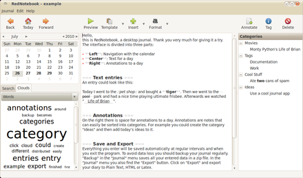
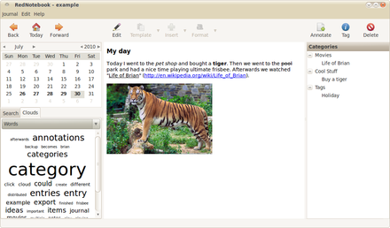

About & Features
- Tagging
- Spell Check
- Format your text bold, italic or underlined
- Insert Images, files and links to websites
- Links and mail addresses are recognized automatically
- Live-Search
- Automatic saving
- Backup to zip archive
- Word Clouds with most often used words and tags
- Templates
- Export the journal to PDF, HTML, Latex or plain text
- The data is stored in plain text files, no database is needed
- Translated into more than 20 languages
RedNotebook is a modern journal
It includes a calendar navigation, customizable templates, export functionality and word clouds. You can also format, tag and search your entries. RedNotebook is Free Software under the GPL.
Screenshots
|

RedNotebook 1.1 on Ubuntu |

RedNotebook 1.1 - Preview Mode |
{kind=link}
{kind=link}
News
Version 1.1.2 released - 2010-12-26
Right on time for the latest Christmas notes RedNotebook 1.1.2 has been released. This version is the result of four months of development with the help of many beta testers from the RedNotebook users group. Highlights of this version are: Fullscreen mode (F11), better search, structured headers and many bug fixes (especially for the windows version).
New project: Pogo - 2010-10-10
Some info unrelated to RedNotebook: In the last weeks I have been busy writing a new audio player for Linux: Pogo. I had the feeling that there were not enough audio players already, so I thought I'd give it a try ;) Pogo is very fast, uses very little screen space and is easy-to-use. It doesn't have the bells and whistles of some other media players that try to play videos and walk your dog, instead it focuses on the essential stuff. It does have some bling though: Album covers are automatically downloaded and shown directly in the playlist. There is an intelligent playlist that groups your albums and does not show redundant album or artist information if a track is grouped. It also has Desktop Notifications and an equalizer. Give it a try at launchpad.net/pogo.
Version 1.1.1 released - 2010-08-21
This release fixes many small issues and adds some minor features. Annotation editing has been improved and simplified. You can now delete annotations with the "DELETE" key. The size of the Windows installer has been reduced and the Windows version now uses a fresh theme and new icons. Additionally RedNotebook has been translated to British English and Norwegian Bokmal.
Flattering allowed - 2010-08-19
Have a look at the exciting new micro-payment system Flattr. If you like RedNotebook you can now flattr it at the bottom of this page (Currently disabled).
Version 1.1 released - 2010-08-03
This is the first release on the way to RedNotebook 2.0. Lots of things have been cleaned up and improved. You can now search for dates, allowing you to show for example all days belonging to 2010-05. Additionally you can now jump directly to e.g. 2010-05-07. The integrated check for new versions is now slicker, and the program now restores the last opened tab (search or cloud view) when it is started. Invisible for the normal user, but an important improvement: The data files now contain only readable unicode text making your data even more future-proof and accessible. Many bugs have been fixed and translations have been updated for 18 languages.
New Homepage - 2010-08-02
The new RedNotebook website has been launched. I features a cleaner structure and easier navigation. The design is based on the Clementine homepage by Carlos Jenkins. Please report any errors you encounter.
Version 1.0 released - 2010-06-23
This release marks the first big milestone of the project. All initial goals have been accomplished and now we’ll see what the road to 2.0 will look like ;) Since 0.9.5 only small fixes have been made and the documentation and the translations have been updated. Hope you like it!